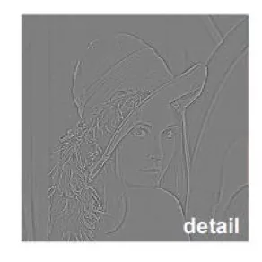
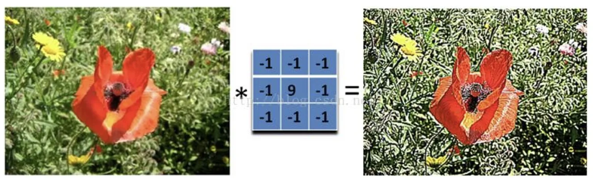

计算机视觉 · 第 2 章 图像处理基础
2.8 图像锐化
平滑与锐化是同一件事的两面：平滑把像素之间的差异压平，锐化把差异重新拉开。这一节只有三张课件，内容很短，却是前面滤波知识的直接出口——锐化不需要新的数学，它只是「用原图减去平滑图得到细节，再把细节加回原图」，与均值、中值、高斯滤波的作用正好相反。
1. 锐化的基本思路
课件用一句话把锐化说完了：找到图像的边缘，然后把边缘加到原本的图像上，这样就强化了图像的边缘。这里的「边缘」不限于用差分检测出来的那条边界，而是所有被平滑抹掉的快速变化——轮廓、纹理，这些通常统称为细节。平滑滤波把细节压低，锐化把细节抬回来。
值得留意的是，锐化并没有引入新的运算：取细节要用平滑，加回细节要用加法，整个过程仍然是卷积与逐点运算的组合。理解了平滑滤波为什么能抹掉细节，锐化的做法就是把同一件事倒过来写。
2. 从原图里取出细节
要把细节加回去，先得把它单独取出来。课件第 49 张用一张流程图给出了取法：先对原图做一次平滑，图中标注的核尺寸是 5×5，得到 smoothed 图；再用原图减去这张平滑图，得到的就是 detail。整条流程可以写成两行式子：
detail = original − smoothed
sharpened = original + α · detail上面一行之所以成立，是因为平滑图保留的是图像里缓慢变化的部分；把它从原图里减掉，剩下的正是被平滑抹去的东西——像素值快速变化的那些位置，也就是边缘与纹理。下面一行是锐化要用的结论：把细节按系数 α 加权之后加回原图。课件第 49 张的流程图把这条链画全了，图中依次出现了 original、smoothed（5×5）、detail、标注为 +α 的加权以及最终的 sharpened。

3. 把细节加回去：系数 α 与最终结果
整条流程里唯一需要人来定的量是系数 α，它决定细节被放大到多少。α 越大，边缘两侧的明暗对比被拉开得越明显，图像看起来越「锐」。但细节里不只有边缘，噪声同样属于快速变化的内容，所以按同一个 α 放大细节，也会把噪声一起放大——顺着上面两行式子就能看出来：加法对 original 与 detail 一视同仁，而 detail 里同时装着结构与噪声。
课件第 50 张把同一句结论又写了一遍，并配上一组图例：找到图像的边缘，然后把边缘加到原本的图像上，这样就强化了图像的边缘。到这里，锐化的全部内容就只有这么多——它不是一套新算法，而是「平滑取细节、加权加回去」这两步的组合。

本节小结
- 图像锐化就是找到图像的边缘，然后把边缘加到原本的图像上，从而强化图像的边缘；它和均值、中值、高斯等平滑滤波的作用相反。
- 细节的取法是「原图减去平滑图」：detail = original − smoothed，课件中平滑核标注为 5×5；减掉缓慢变化的部分，剩下的就是被抹掉的快速变化。
- 锐化的结果是 sharpened = original + α · detail，α 决定细节被放大的倍数，也就是锐化的强度。
- 细节里同时装着边缘与噪声，所以 α 放大的不只是边缘；这也是锐化通常安排在降噪之后的原因。
- 整个过程没有新的运算：取细节靠平滑（前面讲过的卷积），加回去靠逐点加法，它和 2.4、2.5 节的平滑滤波是一对相反的操作。